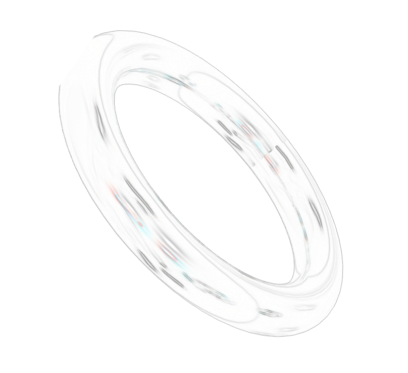
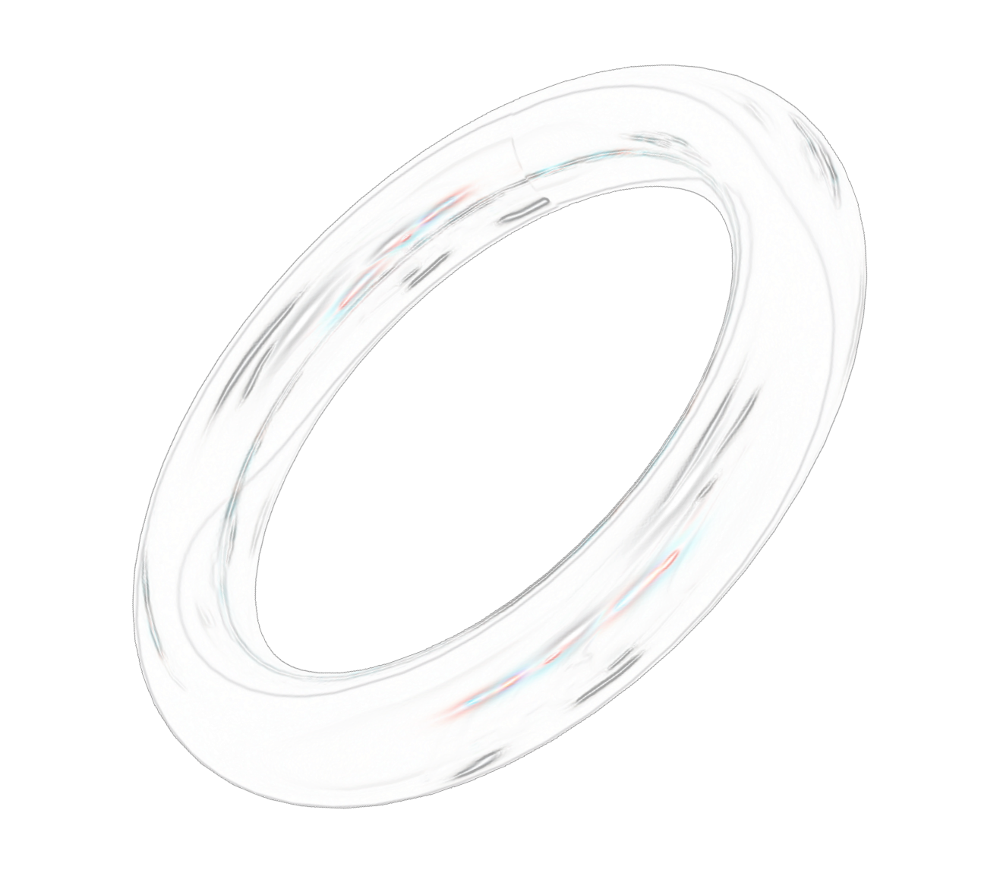
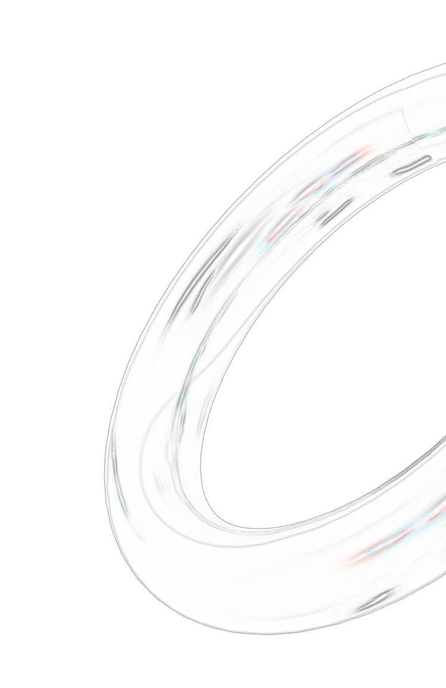

2024.1.12
(Fri.)-1.15
(Mon.)
「ほどける」とは
私たちは、ほどく必要がありました。
流行病による制限を、人との隔たりを、固く絡まっていた繭を。
元通りの日常と、それ以上の未来を創るために。
ほどけることでかたちづくられた、デザイン情報学科22期生の卒業・修了制作展をどうぞご覧ください。




教授紹介
佐藤 淳一
SATO Junichi
マルチメディア
フォトグラフィ
マルチメディア・フォトグラフィ
白石 学
SHIRAISHI Manabu
マルチメディアデザイン
デザイン情報学
マルチメディアデザイン・デザイン情報学

井上 尚司
INOUE Shoji
情報科学
情報ネットワーク
マルチメディア
情報科学・情報ネットワーク・マルチメディア
高山 譲
TAKAYAMA Joe
コンピュータグラフィックス
コンピュータグラフィックス
大石 啓明
OISHI Hiroaki
デジタルアート
コンピュータグラフィックス
デジタルアート・コンピュータグラフィックス
新保 韻香
SHIMBO Inka
グラフィックデザイン
タイポグラフィ
グラフィックデザイン・タイポグラフィ
ヒカルんん
5
6
7